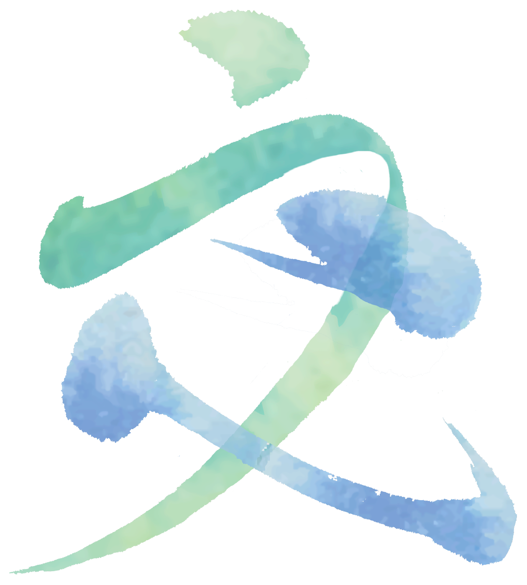

山×川×海「山の熊野」と「海の城下町」をつなぐ川
神話の時代から神々が鎮まる特別な地域として考えられてきた熊野。
山々を歩くとどこか神秘的な雰囲気を感じます。
そんな熊野の地、和歌山県田辺市で生まれました。
険しい山々により磨かれた水が、
豊かに川に流れ、また黒潮が海の幸を運びます。
そうして、ここに人々は暮らしました。
そんな地と人の手で作られたお酒です。

米屋×酒屋熊野米プロジェクトから受け継いだ熱い思い
美しい土地と水でこだわって育むお米を作りたい、と汗を流した先人がいました。
熊野の美味しいお米を使ったお酒をつくりたいというわたしたちの思いと交わり、熊野米でお酒を作るプロジェクトが始まりました。
今×昔80年の時を経て今に蘇る田辺のお酒
熊野詣の入り口、宿場町として栄えていた頃は、
田辺にも酒蔵が数多く存在し、大正11年から続く
酒問屋・堀忠商店にも「關の葵」というお酒がありました。
多くの人が集まり夜な夜なお酒を酌み交わしていた昔に思いを馳せ、
初代から80年。4代目が改めて産んだお酒が「關の葵 交」。
地元の人にはもちろん、
田辺を訪れた人々にぜひご賞味いただきたいお酒です。
人×人人と人をつなぐ酒でありたい
このお酒を作る間、たくさんの人と人が交流しました。
「堀忠商店 日本酒プロジェクト」として名前がない頃から、
地元の人たちと熊野の地やかつての城下町を歩いたりしながら、
一緒に思いを馳せ、そうして出来上がったのがこのお酒です。
生まれた後も人と人をつなぐ酒でありたい。
ぜひ大切な人と過ごす時間に召し上がってください。


特別純米酒 關の葵 交
品目/清酒 アルコール分/16度 原材料名/米（和歌山県産）・米こうじ（和歌山県産米）精米歩号/60％